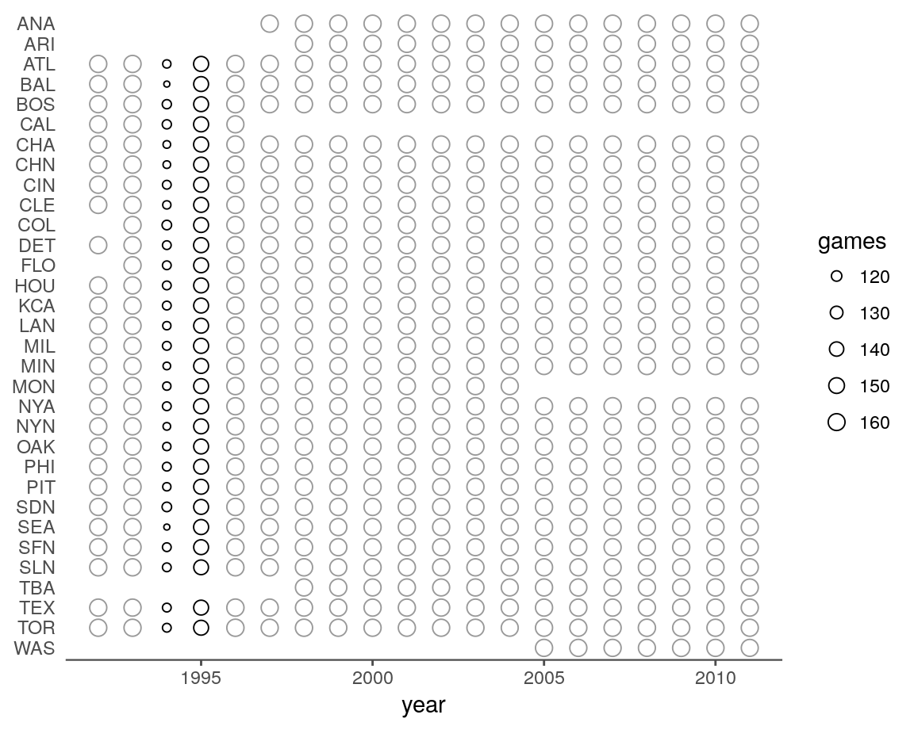
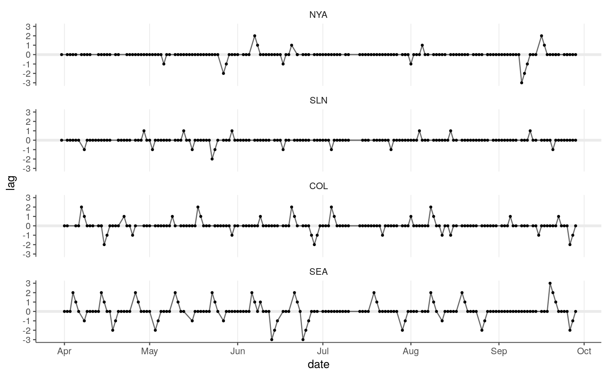
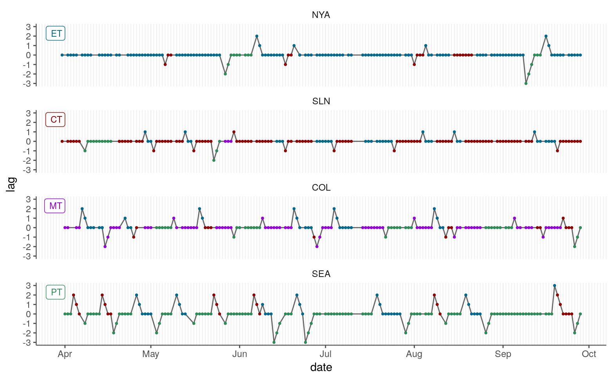

Song, Severini, and Allada (“SSA”) estimated the jet lag of teams using Retrosheet game logs for MLB games from 1992 through 2011. Starting from the game logs and working from their criteria, I’ve attempted to generate the same jet lag data set. To convince myself that I’ve more or less done so, I’ll (1) make a few summary plots to see if things look reasonable and (2) crosscheck my overall numbers with the information available in SSA’s supplemental tables.
The file “lag-combined-1990_2016.csv” should represent every game between 1990 and 2016 with two lines, one for each team. I’ll filter to 1992 through 2011 to match the year range used by SSA.
(lag <- read_csv("../outputs/lag/lag-combined-1990_2016.csv") %>%
mutate(date = ymd(date),
year = year(date)) %>%
filter(between(year, 1992, 2011)) %>%
mutate(game_tz = factor(game_tz,
levels = c("ET", "CT", "MT", "PT", "other"))))
#> # A tibble: 93,120 x 10
#> date team game_tz lag matchup tz_shift days_delta game_id
#> <date> <chr> <fct> <int> <chr> <chr> <int> <chr>
#> 1 1992-04-06 BAL ET 0 CLE@BAL 0->0 0 0
#> 2 1992-04-06 CLE ET 0 CLE@BAL 0->0 0 0
#> 3 1992-04-06 OAK PT 0 KCA@OAK 3->3 0 0
#> 4 1992-04-06 KCA PT 0 KCA@OAK 3->3 0 0
#> 5 1992-04-06 MIL CT 0 MIN@MIL 1->1 0 0
#> 6 1992-04-06 MIN CT 0 MIN@MIL 1->1 0 0
#> 7 1992-04-06 PIT ET 0 MON@PIT 0->0 0 0
#> 8 1992-04-06 MON ET 0 MON@PIT 0->0 0 0
#> 9 1992-04-06 SLN CT 0 NYN@SLN 1->1 0 0
#> 10 1992-04-06 NYN CT 0 NYN@SLN 1->1 0 0
#> # ... with 93,110 more rows, and 2 more variables: park <chr>, year <dbl>Let’s tally the number games per team in each season.
lag %>%
group_by(year, team) %>%
summarise(games = n()) %>%
mutate(normal_season = abs(games - 162) < 4) %>%
ggplot(aes(year, fct_rev(team))) +
geom_point(aes(color = normal_season, size = games), shape = 21) +
ylab(NULL) +
scale_size(range = c(1, 3.5)) +
scale_color_manual(values = c("black", "gray60"), guide = FALSE) +
theme_remove_axis("y", text = FALSE)
Nothing looks off here after accounting for a few historical events. Most years are within 3 games of 162 (gray), with the exception of the 1994 and 1995 seasons. A strike disrupted play during these two years. In addition to the 1994 and 1995 columns, the other thing that stands out in the plot above is the presence of incomplete rows. Some of these represent births (ARI, COL, FLO, TBA), while the remaining ones can be paired together to reveal reincarnations (CAL → ANA, MON → WAS).
The values of interest in this data set are the lag values. To make it easier to visualize these, I’m going to look at the lags of four teams—one for each time zone—in a single season.
selteams <- c("NYA", "SLN", "COL", "SEA")
lag2011 <- lag %>%
filter(year == "2011", team %in% selteams) %>%
mutate(team = factor(team, levels = selteams))Here are the lags for these teams across the 2011 season.
lag2011 %>%
ggplot(aes(date, lag)) +
geom_hline(yintercept = 0, color = tc$background_light, size = 1.25) +
geom_line(alpha = 0.6) +
geom_point(size = 0.7) +
scale_x_date(date_breaks = "1 month", date_labels = "%b") +
scale_y_continuous(breaks = -3:3, limits = c(-3, 3)) +
theme_grid("x") +
facet_wrap(~ team, ncol = 1)
This looks like I’d expect:
A team spends most of their time at a lag of zero.
A lag never goes over a magnitude of three, which is good since that should be impossible because ET is coded as 0 and PT at the other end is coded as 3.
Lags decrease by one with consecutive games.
To assess the time zone shifts in more detail, we can color the points by time zone and add a grid to more clearly mark individual days.
colors <- c("#00688b", "#8b0000", "#9400d3", "#2e8b57")
## Create data frame for labeling facets.
zones <- tibble(date = rep(ymd("20110401"), 4),
lag = rep(2.3, 4),
team = fct_inorder(levels(lag2011$team)),
game_tz = levels(droplevels(lag2011$game_tz)),
label = game_tz)
lag2011 %>%
ggplot(aes(date, lag)) +
geom_line(alpha = 0.6) +
geom_point(aes(color = game_tz), size = 0.7) +
geom_label(data = zones, aes(label = label, color = game_tz),
size = 3, hjust = "right") +
scale_x_date(date_breaks = "1 month",
date_minor_breaks = "1 day",
date_labels = "%b") +
scale_y_continuous(breaks = -3:3, limits = c(-3, 3)) +
scale_color_manual(values = colors) +
theme_grid("x", minor = TRUE) +
theme(legend.position = "none") +
facet_wrap(~ team, ncol = 1)
Again, this looks reasonable. All the time zone shifts seem to match expectations based on the time zone transitions and the number of off days.
One shift that seems suspicious is the last upward peak in Seattle’s schedule: the +3 peak is caused by a move the eastern time, but then Seattle’s very next game is in central time. But, indeed, it looks like Seattle played game number 153 against Cleveland and the next day faced off against the Twins in Minnesota.
As far as I can tell, SSA did not publish their day-by-day lag calculations or the code they used to generate these. Using their two supplemental tables, however, I can gain some idea of whether my generated data set matches up.
Here’s their Table S1:
| Circadian Disruption | Home | Away |
|---|---|---|
| No jet lag | 41602 | 37387 |
| West | 2698 | 4896 |
| 1h jet lag | 1588 | 3078 |
| 2h jet lag | 790 | 1344 |
| 3h jet lag | 320 | 474 |
| East | 2235 | 4252 |
| 1h jet lag | 1519 | 2977 |
| 2h jet lag | 681 | 1203 |
| 3h jet lag | 35 | 72 |
To make it easier to produce these tallies, I’ll reformat the lag data frame.
reformat_lag <- function(data){
separate(data, .data$matchup,
sep = "@", into = c("away_team", "home_team"),
remove = FALSE) %>%
mutate(field = factor(ifelse(.data$team == .data$home_team,
"home",
"away"),
levels = c("home", "away")),
direction = factor(case_when(.data$lag > 0 ~ "to_east",
.data$lag < 0 ~ "to_west",
TRUE ~ "none"),
levels = c("none", "to_west", "to_east"))) %>%
select(date, team, field, direction, everything()) %>%
select(-home_team, -away_team)
}
lag_tally <- reformat_lag(lag)First, let’s focus on the “West” and “East” rows of Table S1.
lag_tally %>%
count(field, direction) %>%
spread(field, n)
#> # A tibble: 3 x 3
#> direction home away
#> <fct> <int> <int>
#> 1 none 41620 37405
#> 2 to_west 2697 4900
#> 3 to_east 2243 4255Those tallies are similar enough that I don’t think my lag calculations are entirely off base. If I generate the lag values using the time zone of the home team rather the time zone of the park, I can get closer to the Table S1 tallies.
lag_ht <- read_csv("../outputs/lag/lag-combined-1990_2016-ht.csv") %>%
mutate(date = ymd(date),
year = year(date),
game_tz = factor(game_tz,
levels = c("ET", "CT", "MT", "PT", "other"))) %>%
filter(between(year, 1992, 2011))lag_ht_tally <- reformat_lag(lag_ht)lag_ht_tally %>%
count(field, direction) %>%
spread(field, n)
#> # A tibble: 3 x 3
#> direction home away
#> <fct> <int> <int>
#> 1 none 41626 37407
#> 2 to_west 2697 4899
#> 3 to_east 2237 4254Each count from my generated data set is within three of the corresponding reported value. When these lags are split up by their magnitude, the counts for these groups are also close if not identical to what’s reported in Table S1.
lag_ht_tally %>%
filter(direction != "none") %>%
count(field, direction, abs(lag)) %>%
spread(field, n)
#> # A tibble: 6 x 4
#> direction `abs(lag)` home away
#> <fct> <int> <int> <int>
#> 1 to_west 1 1589 3080
#> 2 to_west 2 787 1345
#> 3 to_west 3 321 474
#> 4 to_east 1 1521 2978
#> 5 to_east 2 681 1204
#> 6 to_east 3 35 72So it seems that (1) I’m calculating my lags in a way that’s similar to SSA’s jet lag definition and (2) SSA based their time zone based on the recorded home team rather than the time zone of the park’s location. These usually but not always line up:
odd_parks <- filter(lag_tally, field == "home") %>%
## Group parks for same team (e.g., ARL01, ARL02).
mutate(park_prefix = substring(park, 1, 3)) %>%
select(team, park_prefix) %>%
distinct() %>%
count(team) %>%
filter(n > 1) %>%
.$team
filter(lag_tally, team %in% odd_parks & field == "home") %>%
select(team, park) %>%
arrange(team, park) %>%
distinct() %>%
as.data.frame()
#> team park
#> 1 CHA BAL12
#> 2 CHA CHI12
#> 3 CHN CHI11
#> 4 CHN TOK01
#> 5 CLE CLE07
#> 6 CLE CLE08
#> 7 CLE MIL06
#> 8 FLO CHI12
#> 9 FLO MIA01
#> 10 FLO SEA03
#> 11 FLO SJU01
#> 12 HOU HOU02
#> 13 HOU HOU03
#> 14 HOU MIL06
#> 15 MON MON02
#> 16 MON SJU01
#> 17 NYN NYC17
#> 18 NYN NYC20
#> 19 NYN TOK01
#> 20 OAK LAS01
#> 21 OAK OAK01
#> 22 OAK TOK01
#> 23 SDN HON01
#> 24 SDN MNT01
#> 25 SDN SAN01
#> 26 SDN SAN02
#> 27 TBA LBV01
#> 28 TBA STP01
#> 29 TBA TOK01
#> 30 TOR PHI13
#> 31 TOR SJU01
#> 32 TOR TOR02
#> 33 WAS HOU03
#> 34 WAS WAS10
#> 35 WAS WAS11Within this list, we can see games played in Disney’s Wide World of Sports Complex, Hawaii, Japan, Puerto Rico, and Mexico. There are also games at a usual MLB park where the home team doesn’t match. For example, the Marlins played as the home team in Seattle because of a U2 concert.
I’ll need to do a little more work to compare my lag data set with SSA’s Table S2. With the help of pandoc, I’ve converted their docx table into a more useful format.
(s2_wide <- read_csv("../outputs/lag/song2017how-table-s2.csv") %>%
mutate(date = ymd(date)))
#> # A tibble: 4,175 x 5
#> date away home away_lag home_lag
#> <date> <chr> <chr> <int> <int>
#> 1 1992-04-09 LAN SDN 0 -3
#> 2 1992-04-09 SFN ATL 2 1
#> 3 1992-04-10 MIL ANA -2 0
#> 4 1992-04-10 LAN SDN 0 -2
#> 5 1992-04-10 TEX MIN 2 0
#> 6 1992-04-13 ANA TEX 2 0
#> 7 1992-04-13 LAN HOU 2 0
#> 8 1992-04-13 OAK KCA 2 2
#> 9 1992-04-13 SEA CHA 2 2
#> 10 1992-04-14 SDN SFN 0 -2
#> # ... with 4,165 more rowsNotice that there are many fewer rows in this data frame than in lag, which has 93,120 rows. One reason for this is because now each team of a game is represented on the same line. Another reason is that s2_wide only includes games where at least one team had a lag magnitude at or above two.
s2_wide %>%
filter(abs(away_lag) < 2 & abs(home_lag) < 2)
#> # A tibble: 0 x 5
#> # ... with 5 variables: date <date>, away <chr>, home <chr>,
#> # away_lag <int>, home_lag <int>I want to compare the two data sets with a join, so I need to bring their representations a bit closer. s2_wide doesn’t include double header information, so we can’t form a unique row key. Instead, I’ll filter out double header rows from both data sets. (This shouldn’t matter because the lags shouldn’t change across two games on the same day.)
(s2_cmp <- s2_wide %>%
mutate(matchup = paste0(away, "@", home)) %>%
gather(key = "type_team", value = "team", away, home) %>%
gather(key = "type_lag", value = "lag", away_lag, home_lag) %>%
arrange(date, matchup) %>%
mutate(type_lag = str_replace(type_lag, "_lag", "")) %>%
filter(type_team == type_lag) %>%
select(date, team, lag, matchup))
#> # A tibble: 8,350 x 4
#> date team lag matchup
#> <date> <chr> <int> <chr>
#> 1 1992-04-09 LAN 0 LAN@SDN
#> 2 1992-04-09 SDN -3 LAN@SDN
#> 3 1992-04-09 SFN 2 SFN@ATL
#> 4 1992-04-09 ATL 1 SFN@ATL
#> 5 1992-04-10 LAN 0 LAN@SDN
#> 6 1992-04-10 SDN -2 LAN@SDN
#> 7 1992-04-10 MIL -2 MIL@ANA
#> 8 1992-04-10 ANA 0 MIL@ANA
#> 9 1992-04-10 TEX 2 TEX@MIN
#> 10 1992-04-10 MIN 0 TEX@MIN
#> # ... with 8,340 more rowsprepare_cmp <- function(data){
filter(data, .data$game_id < 2) %>%
mutate(team = case_when(.data$team == "CAL" ~ "ANA",
.data$team == "MON" ~ "WAS",
TRUE ~ .data$team),
matchup = str_replace(.data$matchup, "CAL", "ANA"),
matchup = str_replace(matchup, "MON", "WAS"))
}
lag_cmp <- prepare_cmp(lag)
lag_ht_cmp <- prepare_cmp(lag_ht)Now the two tables can be joined (well, three tables because I’m using both the park-based and home-team-based lag values).
full <- full_join(lag_cmp, s2_cmp,
suffix = c("", ".s2"),
by = c("date" = "date",
"team" = "team",
"matchup" = "matchup"))
full_ht <- full_join(lag_ht_cmp, s2_cmp,
suffix = c("", ".s2"),
by = c("date" = "date",
"team" = "team",
"matchup" = "matchup"))All the games in Table S2 appear to be in my generated tables.
filter(full, is.na(lag))
#> # A tibble: 0 x 11
#> # ... with 11 variables: date <date>, team <chr>, game_tz <fct>,
#> # lag <int>, matchup <chr>, tz_shift <chr>, days_delta <int>,
#> # game_id <chr>, park <chr>, year <dbl>, lag.s2 <int>
filter(full_ht, is.na(lag))
#> # A tibble: 0 x 11
#> # ... with 11 variables: date <date>, team <chr>, game_tz <fct>,
#> # lag <int>, matchup <chr>, tz_shift <chr>, days_delta <int>,
#> # game_id <chr>, park <chr>, year <dbl>, lag.s2 <int>A few of the lag values don’t match up for the home-team-based lag values.
filter(full_ht, lag != lag.s2) %>%
select(-game_id, -year)
#> # A tibble: 12 x 9
#> date team game_tz lag matchup tz_shift days_delta park lag.s2
#> <date> <chr> <fct> <int> <chr> <chr> <int> <chr> <int>
#> 1 2007-04-18 SDN PT -1 ARI@SDN 1->3 1 SAN02 -2
#> 2 2008-04-16 ANA PT -1 KCA@ANA 1->3 1 ANA01 -2
#> 3 2008-04-23 SDN PT -1 SFN@SDN 1->3 1 SAN02 -2
#> 4 2008-05-20 CHA CT 1 CLE@CHA 3->1 2 CHI12 2
#> 5 2010-05-04 CHN ET 0 CHN@PIT 1->0 2 PIT08 1
#> 6 2010-06-25 PHI ET 0 PHI@TOR 0->0 1 PHI13 -2
#> 7 2010-06-25 SDN ET 0 SDN@FLO 0->0 1 MIA01 2
#> 8 2011-06-24 MIN CT 2 MIN@MIL 3->1 1 MIL06 -2
#> 9 2011-06-24 NYN CT -1 NYN@TEX 0->1 1 ARL02 2
#> 10 2011-06-25 MIL CT 0 MIN@MIL 1->1 1 MIL06 -2
#> 11 2011-06-25 MIN CT 1 MIN@MIL 1->1 1 MIL06 -1
#> 12 2011-06-28 FLO PT -2 FLO@OAK 0->3 2 OAK01 0Looking at the game logs as well as baseball-reference.com, my values seem right, so that probably indicates that I’m missing a few edge cases of the lag calculation rules. One edge case that I think explains the first three of these is calculating the lag for a trip when the team starts off with a lag. For example, for the April 18, 2007, entry above, San Diego had a +1 lag when they traveled from Chicago back to San Diego, so they ended up at -1 in my calculations instead of -2. I’m not sure what makes the most sense here, but these events are pretty rare because a team usually stays around for at least three days, which is enough to drop their lag back to zero.
For most of the entries, though, I’m not spotting any obvious explanations.
When I consider the park-based lags instead, there are of course additional discrepancies.
filter(full, lag != lag.s2) %>%
select(-game_id, -year) %>%
as.data.frame()
#> date team game_tz lag matchup tz_shift days_delta park lag.s2
#> 1 1996-08-16 SDN CT -1 NYN@SDN 0->1 1 MNT01 -3
#> 2 1996-08-16 NYN CT 0 NYN@SDN 0->1 2 MNT01 -2
#> 3 1996-08-17 SDN CT 0 NYN@SDN 1->1 1 MNT01 -2
#> 4 1996-08-17 NYN CT 0 NYN@SDN 1->1 1 MNT01 -1
#> 5 1996-08-19 NYN PT -2 NYN@SFN 1->3 1 SFO02 0
#> 6 1996-08-20 NYN PT -1 NYN@SFN 3->3 1 SFO02 0
#> 7 1997-04-19 SDN other -4 SLN@SDN 0->6 3 HON01 -1
#> 8 1997-04-19 SDN other -4 SLN@SDN 0->6 3 HON01 -1
#> 9 1997-04-19 SLN other -5 SLN@SDN 0->6 2 HON01 -2
#> 10 1997-04-19 SLN other -5 SLN@SDN 0->6 2 HON01 -2
#> 11 2007-04-10 ANA CT 1 ANA@CLE 3->1 2 MIL06 2
#> 12 2007-04-13 CLE ET 1 CHA@CLE 1->0 1 CLE08 0
#> 13 2007-04-18 SDN PT -1 ARI@SDN 1->3 1 SAN02 -2
#> 14 2008-04-16 ANA PT -1 KCA@ANA 1->3 1 ANA01 -2
#> 15 2008-04-23 SDN PT -1 SFN@SDN 1->3 1 SAN02 -2
#> 16 2008-05-20 CHA CT 1 CLE@CHA 3->1 2 CHI12 2
#> 17 2010-05-04 CHN ET 0 CHN@PIT 1->0 2 PIT08 1
#> 18 2010-06-25 PHI ET 0 PHI@TOR 0->0 1 PHI13 -2
#> 19 2010-06-25 SDN ET 0 SDN@FLO 0->0 1 MIA01 2
#> 20 2011-06-24 MIN CT 2 MIN@MIL 3->1 1 MIL06 -2
#> 21 2011-06-24 NYN CT -1 NYN@TEX 0->1 1 ARL02 2
#> 22 2011-06-25 MIL CT 0 MIN@MIL 1->1 1 MIL06 -2
#> 23 2011-06-25 MIN CT 1 MIN@MIL 1->1 1 MIL06 -1On the other hand, when I subset my generated data set based on Table S2’s criteria, I find eight rows (four games) that aren’t in Table S2 if I use the home-team-based values.
full_ht %>%
filter(is.na(lag.s2)) %>%
group_by(date, matchup, game_id) %>%
filter(max(abs(lag)) > 1) %>%
ungroup() %>%
select(-lag.s2, -game_id) %>%
as.data.frame()
#> date team game_tz lag matchup tz_shift days_delta park year
#> 1 2010-06-25 OAK PT 0 PIT@OAK 3->3 2 OAK01 2010
#> 2 2010-06-25 PIT PT -2 PIT@OAK 1->3 1 OAK01 2010
#> 3 2010-06-25 MIL CT 0 SEA@MIL 1->1 1 MIL06 2010
#> 4 2010-06-25 SEA CT 2 SEA@MIL 3->1 1 MIL06 2010
#> 5 2011-06-27 SEA PT -3 ATL@SEA 0->3 1 SEA03 2011
#> 6 2011-06-27 ATL PT 0 ATL@SEA 3->3 1 SEA03 2011
#> 7 2011-06-28 SEA PT -2 ATL@SEA 3->3 1 SEA03 2011
#> 8 2011-06-28 ATL PT 0 ATL@SEA 3->3 1 SEA03 2011The two ATL@SEA games are the result of the U2 situation described above (which was the Mariner’s previous series). My guess is that, instead of using the park IDs to get the time zone, SSA are flagging these series as problematic and filtering them out.
Here are the parked-based values that aren’t in Table S2:
full %>%
filter(is.na(lag.s2)) %>%
group_by(date, matchup, game_id) %>%
filter(max(abs(lag)) > 1) %>%
ungroup() %>%
select(-lag.s2, -game_id) %>%
as.data.frame()
#> date team game_tz lag matchup tz_shift days_delta park year
#> 1 1996-08-19 SDN PT -2 WAS@SDN 1->3 1 SAN01 1996
#> 2 1996-08-19 WAS PT 0 WAS@SDN 3->3 1 SAN01 1996
#> 3 1997-04-20 SDN other -3 SLN@SDN 6->6 1 HON01 1997
#> 4 1997-04-20 SLN other -4 SLN@SDN 6->6 1 HON01 1997
#> 5 2000-04-03 SLN CT 0 CHN@SLN 1->1 0 STL09 2000
#> 6 2000-04-03 CHN CT 2 CHN@SLN 6->1 4 STL09 2000
#> 7 2000-04-03 NYN ET 3 SDN@NYN 6->0 4 NYC17 2000
#> 8 2000-04-03 SDN ET 0 SDN@NYN 0->0 0 NYC17 2000
#> 9 2010-06-25 OAK PT 0 PIT@OAK 3->3 2 OAK01 2010
#> 10 2010-06-25 PIT PT -2 PIT@OAK 1->3 1 OAK01 2010
#> 11 2010-06-25 MIL CT 0 SEA@MIL 1->1 1 MIL06 2010
#> 12 2010-06-25 SEA CT 2 SEA@MIL 3->1 1 MIL06 2010
#> 13 2011-06-24 FLO PT -2 SEA@FLO 0->3 2 SEA03 2011
#> 14 2011-06-24 SEA PT -3 SEA@FLO 0->3 1 SEA03 2011
#> 15 2011-06-25 FLO PT -1 SEA@FLO 3->3 1 SEA03 2011
#> 16 2011-06-25 SEA PT -2 SEA@FLO 3->3 1 SEA03 2011So, based on the comparisons with Table S1 and S2, I think
my lag calculations pretty closely follow SSA’s definition because, using the home-team-based time zones, there is good, though not perfect, agreement between the sets.
SSA didn’t use the park ID to determine the time zone.
I will use my park-based lag calculations going forward.